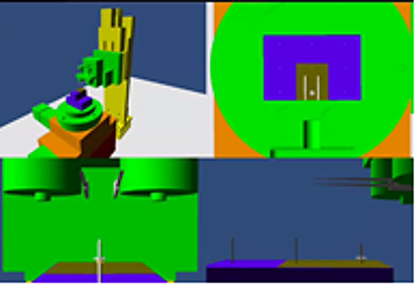
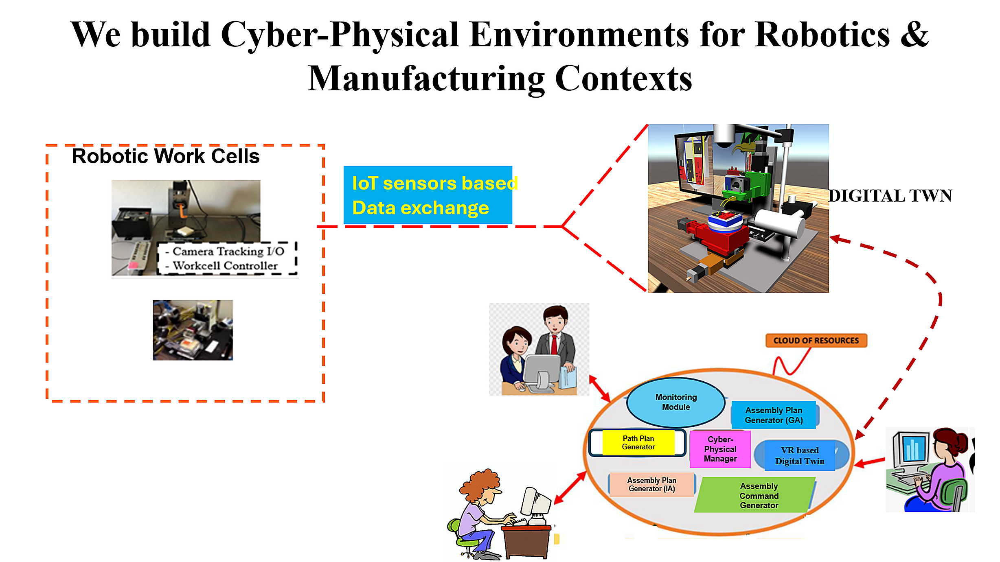
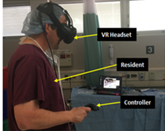

Domains
Process Domains we serve
Our services span several process domains:
- Advanced Manufacturing & Robotics
- Smart Health & Medicine
- Space Systems
- Cyber Learning (Engineering and K-12)
Advanced Manufacturing & Robotics
We specialize in (a) building Extended Reality (XR)-based environments (using Virtual Reality VR and Mixed Reality MR technology) as well as (b) building cyber-physical environments linking a virtual XR environment to its physical twin (which is the physical environment such as a robotic cell or factory at a level of abstraction or detail required by a customer)
Our experts pioneered the notion of virtual prototypes, way before the current concept of digital twins became popular (for the record, they mean the same).
For our customers, we can design and build specific XR-based environments at various levels of abstraction (at the machine level, the work cell level or the entire factory).
We can build such environments based on customer preferences of the VR platforms (Vive, Meta Quest, and others).

Our engineering experts were the first to propose and demonstrate the ‘digital twin’ approach for robotic assembly, which allows engineers to propose and compare the feasibility of alternative robotic assembly plans virtually inside a VR environment.
We coined the term virtual manufacturing because it allowed engineers to virtually design a robotic work cell or manufacturing task and identify drawbacks and problems, compare various process details and make needed modifications before purchasing or building any robotic or manufacturing capability.
Our mantra was (and is) design, simulate, modify and validate using such virtual prototypes or digital twins.

We set the standard on what can be simulated inside a Digital Twin and how it could be simulated following a unique information centric process.
Our Digital Twin project teams have always possessed engineering skills spanning multiple disciplines:
robotics/manufacturing (typically mechanical/industrial engineering)
Simulation and VR model building (industrial engineering and computer science)
We have pioneered a new way to adopt cyber-physical approaches, which allows engineers to propose, analyze and validate ideas prior to implementing them on corresponding physical twins comprising of robots and manufacturing equipment.

Our information intensive process model based simulators enable our customers to understand and model complex manufacturing and robotic interactions, and use them as a basis to mimic smart engineering decision-making processes using 3D digital twins. We are the group that put the ‘smart’ in smart manufacturing.
Today, we continue this legacy of information-centric cyber-physical tools and are now pioneering the next generation of cognitive and AI-based manufacturing tools.
Smart Health & Medicine
We began working with surgeons, nurses and residents in the 2000s and developed the first cyber-physical framework to allow surgeons to train residents at distributed locations using XR tools.
We specialize in designing and building simulators for orthopedic surgery; our design team includes expert orthopedic surgeons who are leaders in hand and leg surgery.
Our participatory design approach is unique and allows us to build advanced simulators with a high level of fidelity.

Space Systems
Our experienced team has worked on NASA-related projects involving Moon and Mars missions.
XR-based simulators are key to preparing astronauts for our nation’s return to the Moon.
We also have experience working on deep space habitat projects as part of NASA’s Xhab initiatives.
Cyber Learning
We have experience working with autism therapists and psychologists to develop exploratory VR-based tools to help autistic students (K-12) to learn science and engineering concepts.
Our team’s prior experience includes working with students, parents, and schoolteachers to develop specialized learning environments for autistic students.